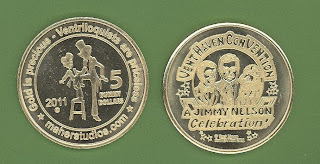

2011 Convention Coins
7/13/2011
{kind=link}

Today is the official release date of the beautiful golden 2011 Jimmy Nelson Celebration Convention Coins. I'm so very appreciative to Convention Chairman, Mark Wade, for granting permission for the official Jimmy Nelson Celebration logo to be used on the reverse of this coin, and to his staff for kindly inserting one coin into each registrant's packet of official convention materials. The early feedback of excited enthusiasm indicates this will likely be a favorite collectible by ventriloquists worldwide. You can own one or more of these coins whether or not you attended the convention. I have 2011 Convention Coins for sale and ready to ship: $6.00 each or two for $10.00. mahertalk@aol.com* * * * * *
Convention Coin Comments:
"Clinton - thanks! They are a huge hit here at ConVENTion!" Tom Crowl
* * * *
"Clinton, here I am at the 35th annual convention-which is great, by the way. And I got these two beautiful brand new ventriloquist convention coins. Clinton, you did an amazing job! Keep up the great work!" Samuel Vladimirsky